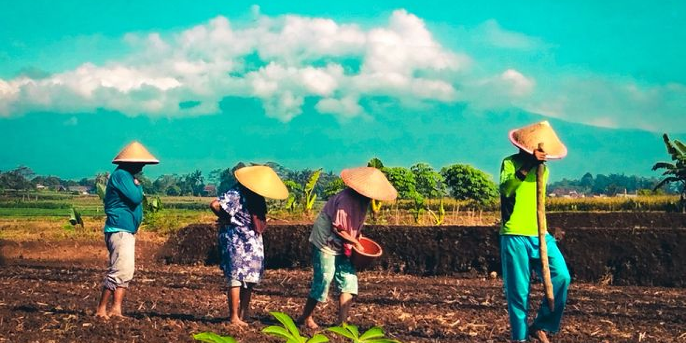

5 Alasan mengapa anak muda harus mengeluti bidang pertanian

Pertanian menjadi bidang strategis uuntuk masa kini dan nanti. Bidang ini mendesak untuk di jelajahi oleh generasi masa kini, terutama anak muda.
Meskipun revolusi teknologi telah mengubah wajah dunia, pertanian tetap menjadi tulang punggung keberlanjutan kehhidupan kita.
Pertanian tidak hanya memmberikan makanan yang kita makan setiap hari, tetapi juga berperan dalam menyokong ekonomi, melestarikan lingkungan, dan mengatasi tantangan global seperti kelaparan dan perubahan iklim.
meskipun menjadi bidang yang strategis, tidak banyak anak muda yang menggeluti bidang ini. hal ini karena persepsi tetang pertanian yang ketinggalan zaman, kurang inovatif, atau kurang menguntungkan secara finansial.
Berikut ini adalah 5 alasan kenapa anak muda harus meennggelutii bidang pertanian yang dikutip dari Muhammad Fauzi:
1. Mengembangkan potensi diri keterampilan: ketahanan fisik, dan kecerdasan diperlukan untuk mengelola lahan pertanian. Dengan mempelajari teknik pertanian kontemporer dan pengetahuan tentang tanaman, pemuda dapat mengasah kemampuan
mereka dan menjadi lebih mandiri.
2. Menjadi pahlawan pangan: pemerintah sering mengingatkan bahwa pertanian adala tulang punggung perekonomian bangsa, tetapi jumlah petani yang semakin meenurun membuat produksi pertanian tidak mencukupi kebutuhan pangan masyarakat.
dengan menjadi petani, pemuda dapat memenui kebutuhan pangan masyarakat dan membantu mengurangi ketergantungan Indonesia terhadap Impor.
3. Menjaga lingkungan: pertanian yang dilakukan secara modern dan bertanggung jawab dapat membantu menjaga lingkungan. Dengan memanfaatkan teknologi pertanian yang ramah lingkungan, sepert pemuda dapaat membantu mencegah degradasi
lahan dan pencemaran lingkungan. Selain itu, denga memperhatikan prinsip-prinsip pertanian berkelanjutan, pemuda bisa turut serta dalam menjaga keseimbangan ekosistem dan keberlangsungan alam.
4. Peluang usaha yang menjanjikan: pertanian bukan hanya sekedar mencari nafkah, namun juga merupakan peluang usaha yang menjanjikan. dengan kemajuan teknologi dan meningkatnya permintaan masyarakat akan produk pertanian yang
berkualitas, pemuda dapat memanfaatkan kesempatan ini untuk mengembangkan bisnis pertanian yang menguntungkan. Dengan mempelajari manajemen dan pemasaran yang baik, pemuda dapat menjadikan pertanian sebagai sumber pendapatan yang
stabil dan berkelanjutan.
5. Melestarikan budaya lokal: pertanian juga merupakan bagian dari budaya lokal yang kaya dan beragam. Dengan menjadi petani, pemuda dapat mempelajari dan melestarikan pengetahuan dan tradisi pertanian yang telah diwariskan olehh
nenek moyang. Selain itu, mempromosikan produk pertanian lokal yang unik dan berkualitas tinggi kepada masyarakat luas. Hal ini membantu memperkuat identitas budaya lokal dan meningkatkan nilai tambah produk pertanian.

Sensus Pertanian
Sensus pertanian 2023 bakal memperkuat akurasi data Pertanian di Indonesia
artikel
26/06/2024
Sensus Pertanian
Sensus pertanian 2023 bakal memperkuat akurasi data Pertanian di Indonesia
artikel
26/06/2024
Sensus Pertanian
Sensus pertanian 2023 bakal memperkuat akurasi data Pertanian di Indonesia
artikel
26/06/2024
Sensus Pertanian
Sensus pertanian 2023 bakal memperkuat akurasi data Pertanian di Indonesia
artikel
26/06/2024
Sensus Pertanian
Sensus pertanian 2023 bakal memperkuat akurasi data Pertanian di Indonesia
artikel
26/06/2024
Masuk untuk menggunakan layanan Harvesty
Masuk